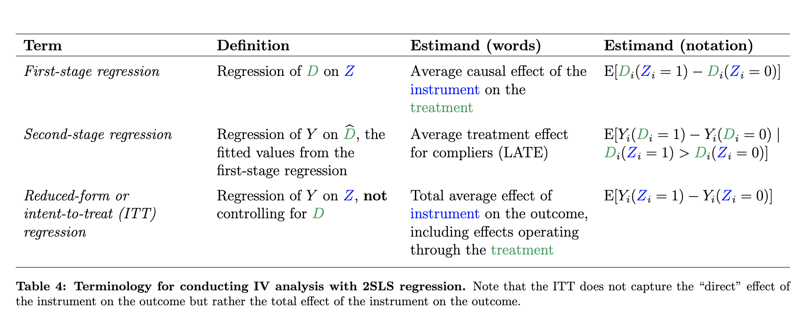
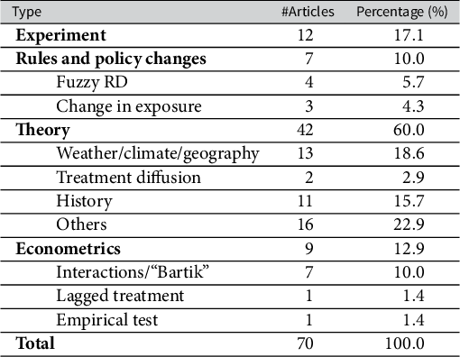
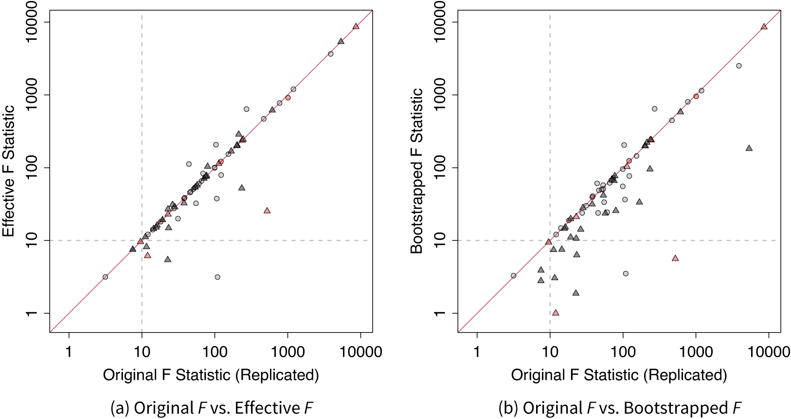
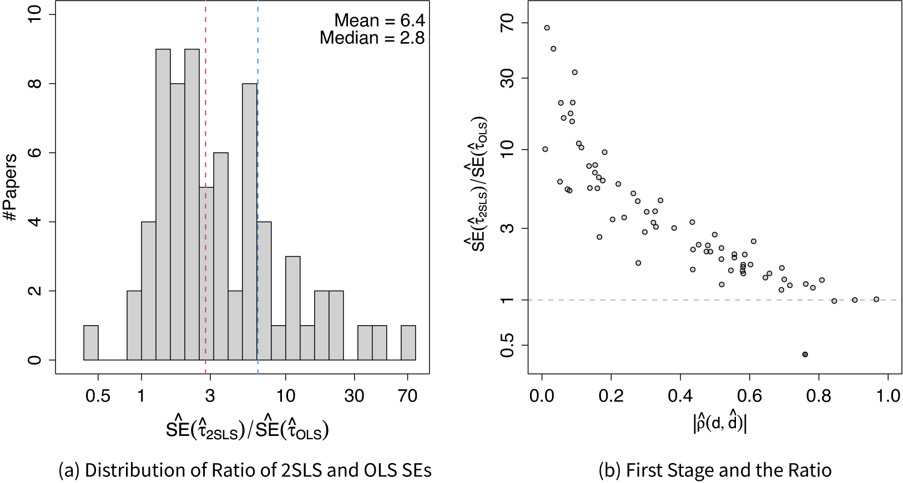
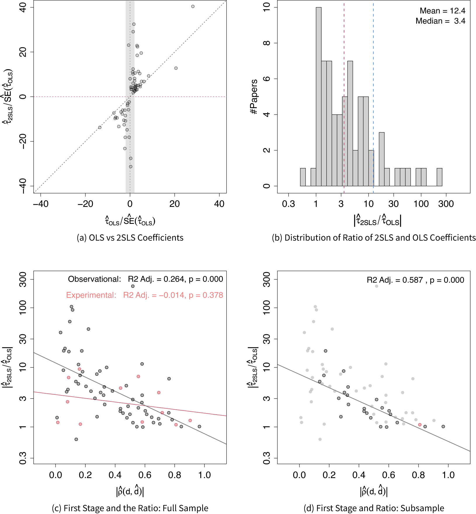
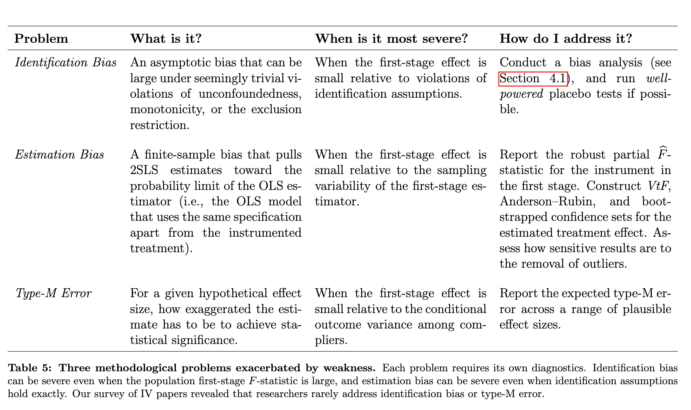
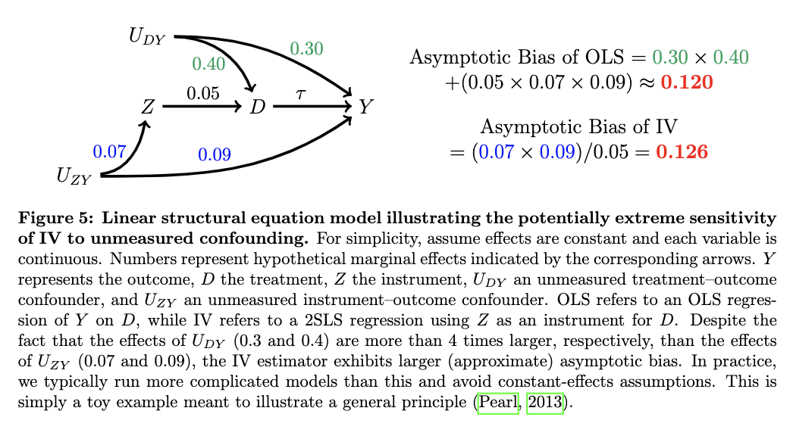

Variable instrumental
May 8, 2025
Plan de la sesión
En busca de variación cuasi-aleatoria
El uso de variables instrumentales es una estrategia popular cuando, si bien no es posible identificar o medir todas las variables confundentes, tenemos alguna fuente de variación en el tratamiento que es (cuasi) aleatoria, incluso si solo ocurre en una subpoblación particular
Discutiremos la identificación y estimación con variables instrumentales bajo dos paradigmas:
- El enfoque canónico, donde se asume un efecto de tratamiento constante
- El enfoque moderno, donde se permiten efectos de tratamiento heterogéneos
Dependiendo del enfoque, la cantidad identificada por el análisis de IV es diferente
Discutiremos en cierto detalle los problemas comunes a todos los análisis basados en IV, y también algunos problemas particulares de cada marco
Como lo describen Felton y Stewart (2024), IV es una estrategia poderosa, pero muy frágil y que debe manejarse con cuidado
Intuición
Originalmente, el análisis de variable instrumental se desarrolló para lidiar con sistemas endógenos en equilibrio: ¿cómo determinar el efecto de la oferta sobre la demanda (y viceversa!) si siempre se encuentran en un único punto?
Solución: ¡Encuentra “factores exógenos” para uno de ellos!
En el entorno moderno de VI, la intuición es un poco más simple: si no podemos aleatorizar el tratamiento de interés, ¿podemos encontrar una variable (como-si) aleatoria que fomente la toma del tratamiento?
Imaginemos que queremos probar la hipótesis: ¿Asistir a esta clase mejora tu productividad a largo plazo?
¿Podemos comparar directamente a los que asistieron con los que no asistieron?
¿Podemos aleatorizar quién realmente asistió a la clase?
¿Podemos aleatorizar invitaciones a la clase, o recordatorios?
¿Podemos construir una variable que prediga quién asistió, independientemente de la productividad potencial?
Intuición para VI
Si pudiéramos realmente aleatorizar los recordatorios, ¡entonces tendríamos un experimento!
Pero recuerda, queremos el efecto de asistir a la clase, no el efecto de estar registrado en la clase!
\[ ATE_{\text{clase}} = E[P_a - P_{\bar{a}}] \] \[ ATE_{\text{recordatorio}} = E[P_r - P_{\bar{r}}] \] El primero es el efecto de interés, el segundo se llama el efecto de intención de tratar (ITT).
¿Bajo qué condiciones serían equivalentes?
De ITT al efecto del tratamiento
Si nuestros supuestos son verdaderos
- es decir, que recibir un recordatorio para asistir a la clase solo afecta la productividad de las personas a través de la clase misma
entonces la estimación ITT proviene solo de la población que cambió su asistencia debido a la invitación!
- Por lo tanto, el \(ATE_{\text{recordatorio}}\) es un promedio de (a) el efecto del recordatorio enviado sobre la productividad entre los que cambiaron, y (b) el efecto cero de los que no cambiaron
En otras palabras, el ITT es una versión diluida del efecto de interés. ¿Podemos volver a la cantidad que queremos? Más o menos
Tipos de cumplidores
Para re-escalar el ITT, necesitamos estimar la probabilidad de cambiar la asistencia a la clase debido al recordatorio \(\rightarrow\) ¡Aleatorización!
Pero para usar esa información, necesitamos algunas aclaraciones adicionales. Dividamos la población en cuatro subgrupos latentes:
- Nunca-tomadores: aquellos a los que no les importa la inferencia causal, o la clase, así que no vendrán de todos modos. ¿Cuál es el efecto del recordatorio para ellos?
- Cumplidores: los olvidadizos (como yo), que asistirán si se les recuerda pero no de otra manera. ¿Cuál es el efecto del recordatorio para ellos?
- Siempre-tomadores: los altamente organizados y amantes de la inferencia causal, que asistirían en cualquier circunstancia. ¿Cuál es el efecto para este grupo?
- Desafiantes: aquellos que planeaban asistir, pero cuando se les recuerda (y después de releer los temas de la clase), ¡preferirían no hacerlo! Asumimos que este grupo no existe
Configuración general
Representación gráfica

Analicemos juntos esta configuración
¿Qué supuestos están implícitos?
¿Podemos pensar en ejemplos aplicados en la literatura?
Supuestos no paramétricos
En términos gráficos, las condiciones VI no paramétricas son:
- El instrumento \(Z\) y el tratamiento \(D\) están \(d-\)conectados en el DAG observacional \(G\):
\[ (Z \not\!\perp\!\!\!\perp D)_G \]
- El instrumento \(Z\) y el resultado \(Y\) están \(d-\)separados en el DAG intervencionista donde hacemos \(do(d)\), \(G_{\overline{D}}\)
\[ (Z \perp\!\!\!\perp Y)_{G_{\overline{D}}} \]
Límites de VI
Bajo ninguna restricción adicional, es decir, solo desde los supuestos no paramétricos codificados en el DAG, el efecto del tratamiento no puede ser identificado.
Sin embargo, podemos: 1) probar la hipótesis nula de que no hay efecto de tratamiento, 2) obtener límites para el efecto del tratamiento
VI Clásico
Terminología de VI

Identificación bajo homogeneidad de efecto
Tradicionalmente, los supuestos de VI se describen en términos de dos modelos lineales y sus términos de error:
Primera etapa: \(D = \tau + \rho Z + \eta\)
Segunda etapa: \(Y = \gamma + \alpha D + \epsilon\)
Supuestos de identificación VI
Exogeneidad y exclusión: \(C(Z,\eta)=0\), y \(C(Z,\epsilon) =0\)
Relevancia de primera etapa: \(\rho \neq 0\)
Efecto constante: \(\alpha = Y_{1i} - Y_{0i} ~ \forall i\)
Dados lo fuertes que son estos supuestos, uno puede preguntarse qué tan común es que este marco sea invocado en la investigación aplicada
VI en ciencia política
Una revisión reciente de Lal et al (2024) encontró que más del 70% de los artículos publicados de VI en Ciencia Política utilizan instrumentos y tratamientos continuos (poco adecuados para el enfoque moderno)

Tipos de instrumentos

Problemas: Primera etapa débil

Problemas: Inferencia poco confiable

Problemas: Comparación con MCO

VI Moderno
Heterogeneidad de efecto y LATE
Asumiendo heterogeneidad de efecto, el estimando de interés ya no es el “efecto total”, sino una nueva cantidad:
El Efecto Local Promedio del Tratamiento (LATE). Formalmente:
\[ E[\underbrace{Y_{d=1,i} - Y_{d=0,i}}_{\text{efecto del tratamiento}} \vert \underbrace{D_{z=1,i} \gt D_{z=0,i}}_{\text{entre cumplidores}}] \]
En palabras, buscamos identificar el efecto del tratamiento \(D\) en el resultado \(Y\), solo entre aquellos que son inducidos a recibir el tratamiento \(D=1\) por el instrumento \(Z\)
¡Nótese que esta población de cumplidores puede ser sustancialmente diferente que la población total!
Los supuestos de VI-LATE que vamos a discutir ahora están incorporados en la formalización de esta cantidad
Seguiré de cerca la discusión de Felton y Stewart (2024)
Supuestos: Relevancia
\[ E[D_{z=1,i} - D_{z=0,i}] \neq 0 \]
Relevancia es el supuesto de que el instrumento sí hace una diferencia!
Es un supuesto sobre la relación \(Z \rightarrow D\)
¿Es este un supuesto comprobable?
¿Es necesario que la asociación entre \(Z\) y \(D\) sea causal?
Supuestos: Instrumento no confundido
\[ Y_{(d,z),i} \perp\!\!\!\perp Z_i \forall d,z \]
Se lee: Los resultados potenciales conjuntos (dependiendo del tratamiento \(D\) y el instrumento \(Z\)) son independientes del instrumento \(Z\)
¿Puedes pensar en un criterio gráfico para esto?
\[ D_{z,i} \perp\!\!\!\perp Z_i \forall z \]
Se lee: El tratamiento potencial es independiente del instrumento
Supuestos: Restricción de exclusión
\[ Y_{(d,z),i} = Y_{(d,z'),i} = Y_{d,i} \forall z, z', d, i \]
“Restricción de exclusión” significa que podemos excluir el instrumento \(z\) de la ecuación del resultado, una vez que se tiene en cuenta el tratamiento
También puede describirse como un supuesto de “mediación completa”: ¡todo el efecto del instrumento sobre el resultado pasa a través del tratamiento!
¿Se puede comprobar esto?
Supuestos: Monotonicidad
\[ D_{z=1,i} \geq D_{z=0,i} \forall i \]
¡Este supuesto es complicado! Y suena más inofensivo de lo que es.
Implica que el instrumento afecta a todos en la misma dirección: un instrumento no puede inducir a algunas personas a recibir el tratamiento, y desalentar a otras personas a recibir el tratamiento
Supuestos: SUTVA y Positividad
Usualmente no se discuten mucho en el contexto de VI, pero recuerda que generalmente estamos asumiendo SUTVA (consistencia + no interferencia + no hay versiones relevantes del tratamiento)
Positividad se requiere siempre que necesitemos condicionar por ciertas covariables \(X\), como en el caso de análisis VI condicionales.
Estimación
Hay varios marcos para realizar la estimación en entornos VI. Vamos a revisar brevemente dos comunes:
El 2SLS (Mínimos cuadrados en dos etapas)
El estimador de Wald (o estimador de razón)
Después de mostrar cómo funcionan en la práctica, nos enfocaremos en mejores prácticas y problemas potenciales a considerar
Estimación
Podemos estimar el ATE entre los cumplidores (es decir, LATE):
\[ LATE = \frac{\text{Forma Reducida}}{\text{Razón de Cumplimiento}} = \frac{\text{ITT}}{\text{P(Cumplidor)}} \] \[ = \frac{Z \rightarrow Y}{Z \rightarrow D} = \frac{E[Y|Z=1] - E[Y|Z=0]}{E[D|Z=1] - E[D|Z=0]} \] \[ = \frac{C(Z,Y)}{V(Z)}/\frac{C(Z,D)}{V(Z)} \]
\[ \frac{(Z'Z)^{-1}(Z'Y)}{(Z'Z)^{-1}(Z'D)} = (Z'D)^{-1}(Z'Y) \]
Problemas
A pesar de ser un enfoque más flexible, permitiendo heterogeneidad de efectos, y más claramente articulado en términos de la analogía experimental, los VI en la práctica siguen siendo muy frágiles
Aunque con algunas diferencias, los problemas identificados por Lal et al., se trasladan al entorno moderno de VI
Felton y Stewart identifican tres de estos problemas, todos ellos exacerbados por la presencia de instrumentos débiles
Aquí solo me enfocaré en los dos primeros problemas que discuten: sesgo de identificación y sesgo de estimación
Los autores también discuten el sesgo Tipo-M; como un problema complicado, no lo expandiré más
Problemas

Una ilustración

Sesgo de identificación
El sesgo de identificación se refiere al caso cuando los supuestos requeridos para que un VI sea válido no se cumplen (perfectamente)
Violación de no confusión: hay un confusor no observado entre el instrumento y el resultado
Violación de exclusión: hay un mecanismo no contabilizado a través del cual el instrumento afecta el resultado
¿Recomendación? Análisis de sesgo
El análisis de sensibilidad, o análisis cuantitativo de sesgo, se refiere al ejercicio de medir el impacto de un confusor no observado de una magnitud asumida sobre el efecto de interés
Para VI, la sensibilidad de la forma reducida es usualmente el objetivo del análisis
Sesgo de estimación
El sesgo de estimación surge en el entorno VI porque el estimador 2SLS está sesgado hacia el estimador MCO
Este sesgo siempre está presente, pero se vuelve despreciable para instrumentos fuertes y tamaños de muestra grandes
- Cuanto más débil es la primera etapa, y por lo tanto más similares son los valores predichos de \(D\) a la entrada observada, más cercanas serán las estimaciones finales
¿Recomendación? Reportar adecuadamente el estadístico F
Tanto las revisiones de Lal como las de Felton encuentran que, a pesar de que la prueba es ampliamente referenciada como una verificación necesaria, pocos estudios reportan el estadístico F de la primera etapa. De los que lo hacen, muchos lo hacen incorrectamente, sin tener en cuenta los errores no clásicos
Esto exacerba los problemas de estimación de VI
¡Fin!

Variable instrumental